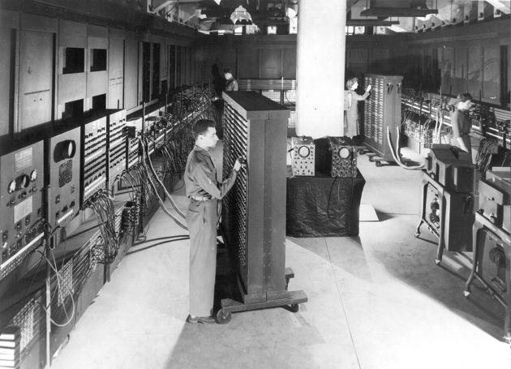

ENIAC (Electronic Numerical Integrator And Computer) został zaprojektowany w 1945 roku, przez naukowców z University of Pennsylvania's Moore School of Electical Engineering. Publicznie zaprezentowano go w lutym 1946 roku na Princeton University. ENIAC pracował z „rekordowym” taktowaniem 0,1 MHz, za co odpowiadało ponad 70 tysięcy rezystorów, 10 tysięcy kondensatorów, 1 500 przekaźników, 6 tysięcy ręcznych przełączników oraz 5 mln połączeń lutowanych. Żeby wszystko w miarę sprawnie działało, potrzebny był cały sztab osób. Produkcja ENIACa pochłonęła ponad 6 mln dolarów, a pierwotnie pierwszy komputer został zaprojektowany do produkcji tablic balistycznych.ENIAC był monstrualnym urządzeniem: zajmował 167 m2 powierzchni, składał się z 42 szaf z blachy stalowej, sięgał ponad 2,4 metra wysokości i mierzył 24 metry długości.
Pierwsze komputery stacjonarne dostępne dla zwykłych użytkowników pojawiły się na rynku i trafiły do naszych domów w latach 80-tych XX wieku, czyli niemal 40 lat po ENIAC-u. W międzyczasie, w latach 60-tych XX wieku, najpotężniejszym desktopem świata (zajmującym dosłownie całe biurko) był CDC 6600. Potrafił wykonywać 3 miliony operacji na sekundę. Lista rozkazów liczyła zaledwie 64 pozycje. Dodając nowatorską technikę chłodzenia podzespołów freonem oraz użycie (po raz pierwszy w komputerach) tranzystorów krzemowych, wyprodukowano komputer o niespotykanej wtedy mocy obliczeniowej, zostawiając konkurencję (głównie IBM) daleko w tyle.
W latach 80-tych za niedościgniony wzór mocy obliczeniowej uchodził już designerski Cray-2. Również w tych latach, a konkretnie w 1982 roku, na komputerach PC zadebiutował system operacyjny Microsoft Windows 1.0, który był pierwszym środowiskiem firmy Microsoft wykorzystującym interfejs graficzny (GUI) i działającym jak nakładka na MS-DOS. I to wówczas tak naprawdę rozpoczęła się era desktopów. Cray-2 był systemem wieloprocesorowym z pamięcią współdzieloną wykonanym w technologii ECL i układami z arsenku galu (GaAs).
Ówczesne komputery osobiste nie zajmowały już całego pokoju, lecz z powodzeniem mieściły się na biurku dzięki niewielkim, blaszanym lub plastikowym konstrukcjom typu desktop. Jednym z najpopularniejszych pecetów w tym okresie był Commodore 64, który zadebiutował na rynku w 1982 roku i kosztował 595 dolarów. Niewielka, beżowa jednostka centralna podpinana była do telewizora. Komputer oferował już podstawowe oprogramowanie biurowe i można było na nim zagrać w takie gry jak Castle Wolfenstein (zapewne sporo naszych czytelników jeszcze pamięta ten tytuł). Częstotliwość taktowania procesora wynosiła 1 MHz. Do tego 64 KB pamięci RAM oraz zewnętrzny napęd dyskietek 5,25 cala dla wersji Commodore 1541, na których można było zmieścić aż 170 KB danych.
Jednak prawdziwą rewolucję w branży komputerowej przyniosły pierwsze komputery z procesorami typu 386, takie jak np. Compaq Deskpro z 1986 roku, a więc jeden z pierwszych komputerów powszechnie używanych w domach. Kosztował wówczas aż 6 499 dolarów, ale wart był swojej ceny: posiadał 32-bitowy procesor o częstotliwości 16 MHz, który umożliwiał zabawę w gry typu Wing Commander w rozdzielczości 640x480 w aż 256 kolorach. Wewnętrznie Compaq Deskpro nie różnił się praktycznie niczym od standardowego IBM PC, jedyna różnica polegała na zamianie BIOS-u na firmowy system Compaqa. Komputer miał 128 kB pamięci (z możliwością rozszerzenia do 640 kB), miał dwie stacje dysków 5Ľ cala i wbudowany 9-calowy monochromatyczny monitor. Klawiatura była wbudowana od wewnątrz w uchylną klapę, chroniącą monitor.
JEra stacjonarnych komputerów trwała w najlepsze jeszcze w latach 90-tych, a inżynierowie prześcigali się w projektowaniu kolejnych, coraz bardziej wydajnych konstrukcji. Jedną z nich był projekt SGI IRIS Crimson, o roboczej nazwie Diehard 2. Był to jeden z pierwszych 64-bitowych komputerów stacjonarnych, który na rynku pojawił się w 1993 roku. Procesor taktowany zegarem 150 MHz, 256 MB pamięci RAM oraz gigantycznym dyskiem twardym (7,2 GB), Diehard 2 posiadał specjalny chipset, który umożliwiał wyświetlanie animacji w 3D. To właśnie ten komputer uznaje się za jeden z pierwszych pecetów, które pojawiły się w filmach.
Oprócz wspomnianego Grida palmę pierwszeństwa wśród laptopów przyznaje się równie często komputerowi przenośnemu Osborne 1, który trafił na sklepowe półki w 1981 roku i kosztował zdecydowanie mniejsze pieniądze niż Grid. Za konfigurację z procesorem Zilog Z80 taktowanym zegarem 4 MHz, 64 KB RAM, ważącą 12 kg, nieposiadającą baterii (akumulator należało dokupić osobno) i z 5-calowym, monochromatycznym ekranem, mieszczącym 24 wiersze po 53 znaki, trzeba było zapłacić 1 795 dolarów. Osborne 1 był też pierwszym komputerem dostarczanym razem z dodatkowym oprogramowaniem – procesor tekstu WordStar, arkusz kalkulacyjny SuperCalc, baza danych dBase II i języki CBASIC + MBASIC, o nominalnej wartości ok. 2000 USD. Praktyka ta została wkrótce powszechnie przyjęta przez producentów innych komputerów, co znacznie obniżyło ceny systemów.
Dopiero lata 90-te przyniosły rzeczywisty boom na laptopy i skokowy rozwój tej kategorii sprzętu. Wraz ze zwiększaniem się ich mocy obliczeniowej – zmniejszała się również masa, wskutek czego laptopy stawały się stopniowo podstawowym wyposażeniem zwykłych użytkowników oraz firm. Przedsiębiorcy zaczęli z nich korzystać, a dobry laptop stał się synonimem prestiżu. Przez wiele lat uważano, że to właśnie laptopy stanowią kres możliwości rozwojowych komputerów osobistych.
Najnowszym produktem z tej rodziny jest Surface Pro 4. Według Microsoftu jest to tablet, który ma zastąpić dotychczas używany przez nas komputer. Do urządzenia dołączane jest też specjalne pióro Surface Pen, przyczepiane magnetyczne do obudowy. Można również dokupić do niego wymienialne końcówki. Dzięki pióru użytkownicy zajmujący się np. grafiką komputerową czy projektowaniem modeli 3D, mogą precyzyjnie odwzorować każdy detal swojego projektu, a umieszczona na końcu Surface Pen gumka pozwala im wymazać każdą niedokładność. Jedno kliknięcie otwiera program do notatek odręcznych OneNote, dwa kliknięcia robią zrzut ekranu. W ten sposób komputer osobisty stał się czymś więcej, niż tylko narzędziem do pracy biurowej.
Najnowszym produktem z tej rodziny jest Surface Pro 4. Według Microsoftu jest to tablet, który ma zastąpić dotychczas używany przez nas komputer. Do urządzenia dołączane jest też specjalne pióro Surface Pen, przyczepiane magnetyczne do obudowy. Można również dokupić do niego wymienialne końcówki. Dzięki pióru użytkownicy zajmujący się np. grafiką komputerową czy projektowaniem modeli 3D, mogą precyzyjnie odwzorować każdy detal swojego projektu, a umieszczona na końcu Surface Pen gumka pozwala im wymazać każdą niedokładność. Jedno kliknięcie otwiera program do notatek odręcznych OneNote, dwa kliknięcia robią zrzut ekranu. W ten sposób komputer osobisty stał się czymś więcej, niż tylko narzędziem do pracy biurowej.